School at Playa Flamingo
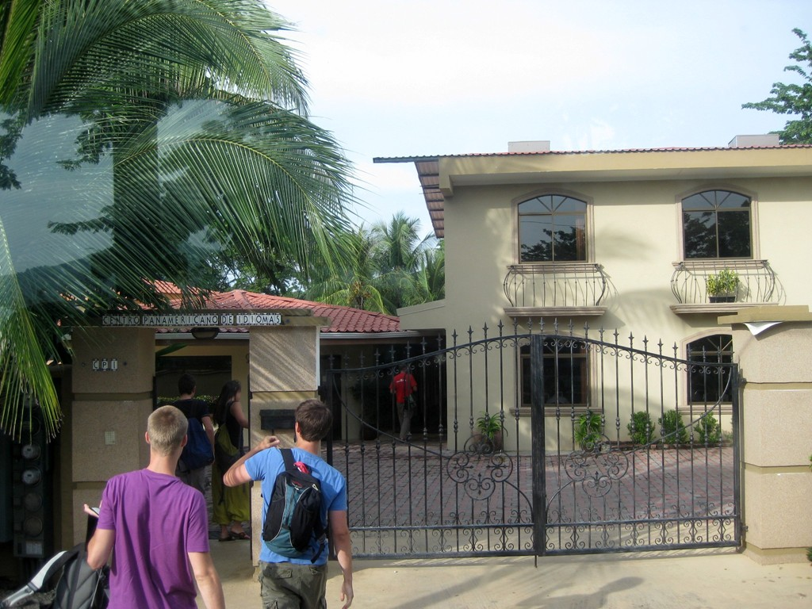 |
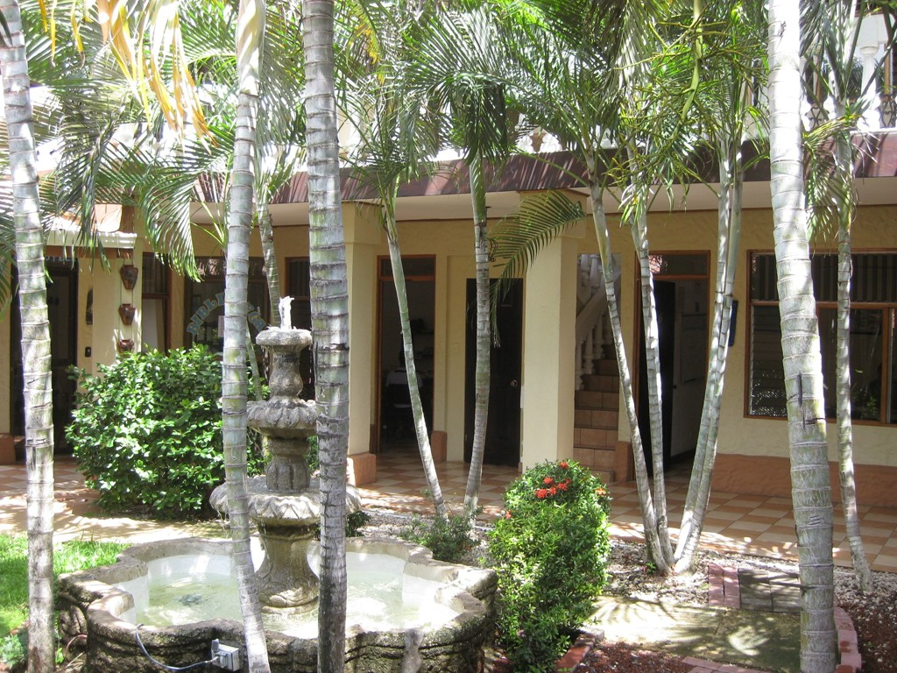 |
| CPI Playa Flamingo | Inner courtyard |
I stayed in a villagio in Potrero, a farming village down several miles of dirt roads. A school bus came each morning at 7AM. I got to CPI by 7:30, drank coffee and studied until 8. (No time for breakfast). Classes ran 8-10:30, followed by a fruit and juice break, then 11-12, followed by lunch. Scuba at 1PM was a 5 minute walk to the beach. The first part of class was largely free conversation and vocabulary and conjugation games. The second half introduced new grammar, with the focus on regular and irregular verbs in the present and past tense, and adverbial phrases relating to time. This was a good approach--verbs are the power words, and the hardest to learn. The nouns come by themselves.
Most of the recent grads were there for 6 weeks, and were doing homestays in Potrero. I didn't cuz I don't sleep well when it's hot, and the villagio had AC. One of the students freaked about "worms and bugs" on the floor at night. Another commented about breakfast, "I've never had anything like that. I think it was beef." And since these are farms, everyone had to get up at 4AM.
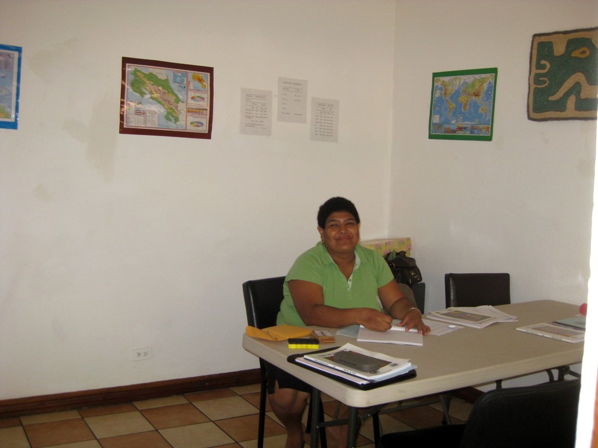 |
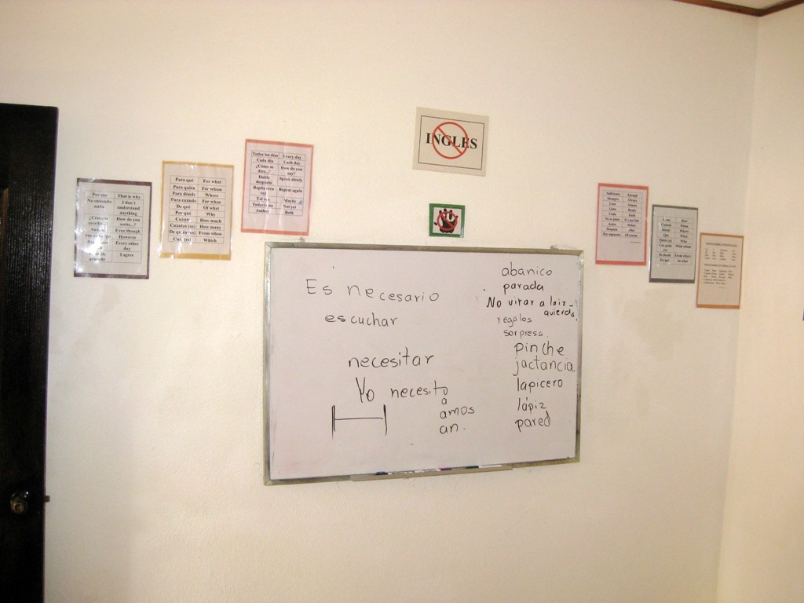 |
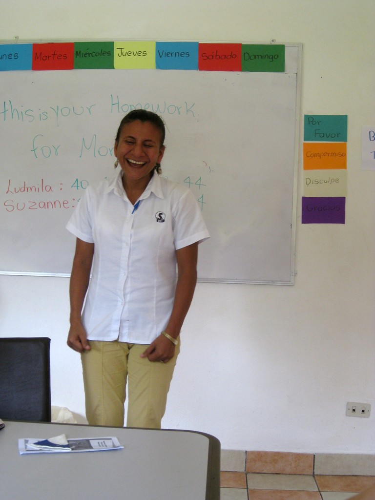 |
| Profesora Flore. She lives about an hour bus ride up the coast. Her mother was an English teacher, but she never learned. Her son has ADD and a cleft palate. She doesn't believe in "la ritalina", but is worried about his lack of attention to anything besides drumming. By now, she will have taken him to San Jose to get the cleft palat repaired, for free--since she's working, it's covered by the national health care system. | Classroom. I broke down and asked about the "black hand" tiles. Turns out they're there for to remind the teachers that they probably have dry erase on their hands, don't touch the walls. | Profesora Miguelina lives a 1.5 hour bus ride in Santa Cruz. When she found out about my interest in medicine, she had me stay after class and quizzed me about my health problems. That was my cue to ask about hers. She was looking for info on her "migranes". Dr. Saunders took a history (in Spanish), diagnosed cluster headaches, and told her that breathing oxygeno puro often aborts the attacks. |
I did well in Spanish--about tripled my fluency. After a few days I found myself spontaneously thinking in Spanish. I kept making jokes in class, told Flore I was a payaso (clown). She took me seriously, and said it was better than one lady whose grandmother had died, had other tragedies in her life, and had spent the first three days crying.
School began changing my relationship to the language. Growing up in Los Angeles, speaking Spanish felt like a club I didn't belong to. Also, it was the language of dangerous people (although the big gang in my area at the time, F Troop, was more about fists and knives than guns. BTW, discovered that mixed martial arts champ Tito Ortiz was a member of F Troop). Now it became more of a language, with the glamor wearing off. Everyone kept saying English was so hard and Spanish was more "suave". But to the English ear, Spanish is like being tapped with a hammer. English is a language of sentences; Spanish is a language of syllables. You have to pronounce every vowel precisely, or you've probably changed a word into another word. Similarly, you have to accent the right syllable or you've quite possibly changed the tense. That forces you to speak like you're practicing piano with a metronome.
But Costa Rica has its own problem with clannish, violent immigrants, Flore told me--the Nicas fleeing violence from the North, but bringing the culture with them. Nicaragua didn't escape Spanish imperial rule. We discussed world problems with the vocabulary of four year olds. "Let's take something we know about Americans," Flore said. "For example...many are fat". Diplomats call this a frank discussion.
Comidas typicas - school lunches
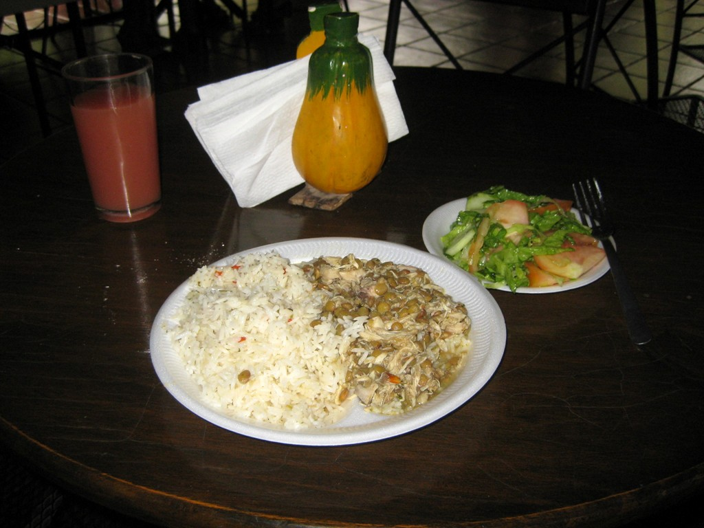 |
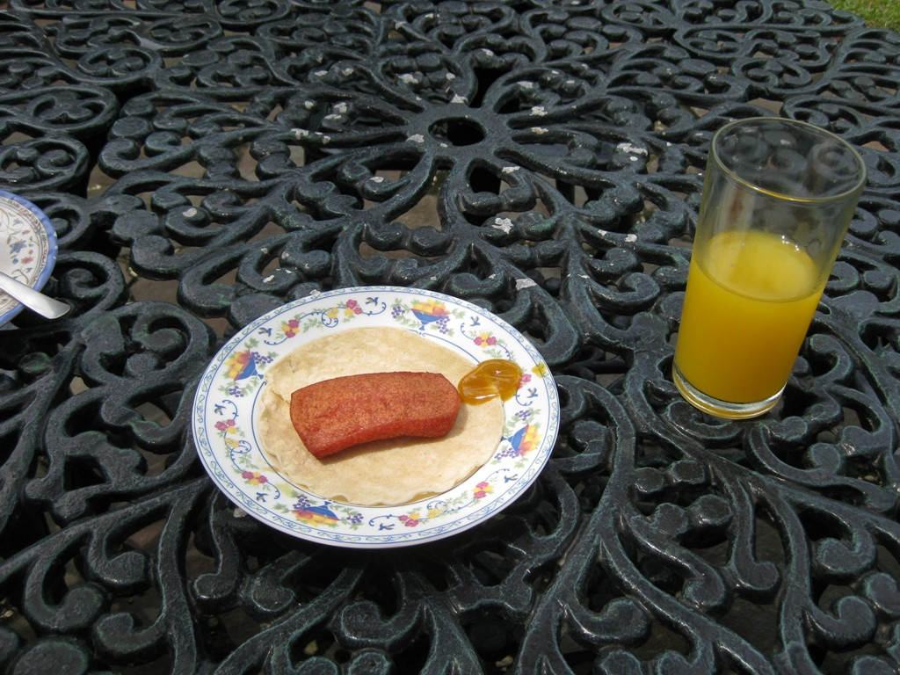 |
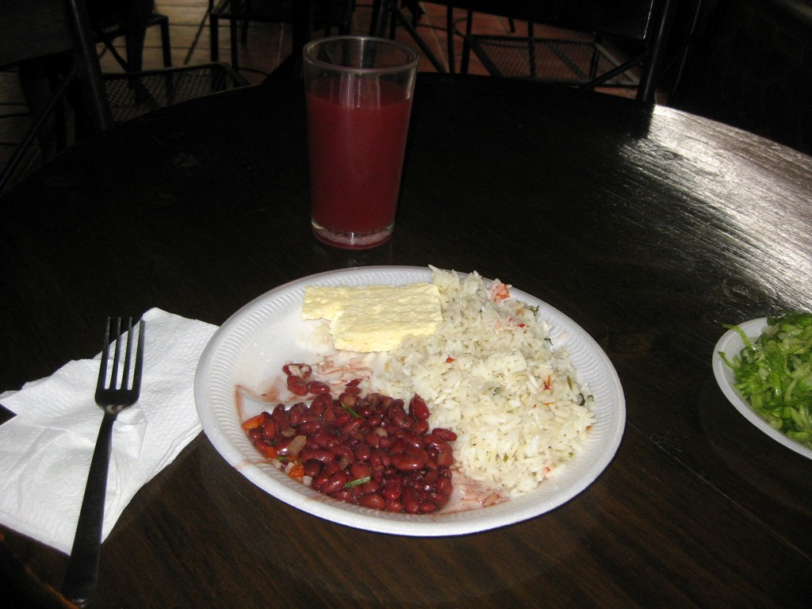 |
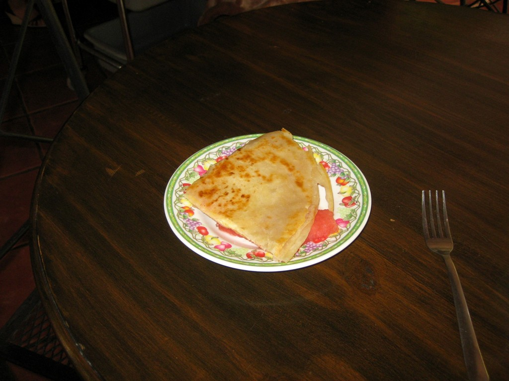 |
| Chicken stew with rice and lentils | Chicken spam on a tortilla | Rice, beans and goat cheese | Ham-stuffed paratha |
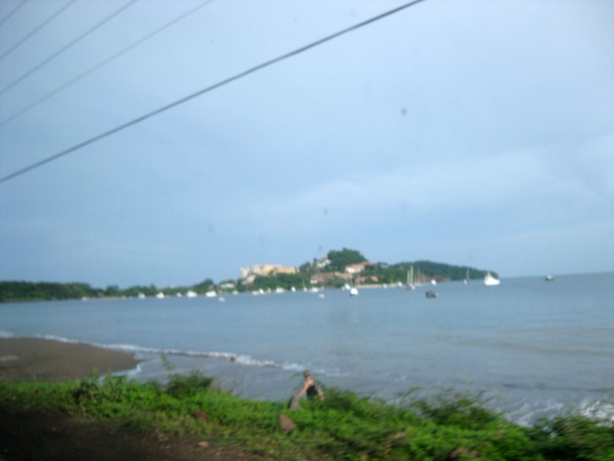 |
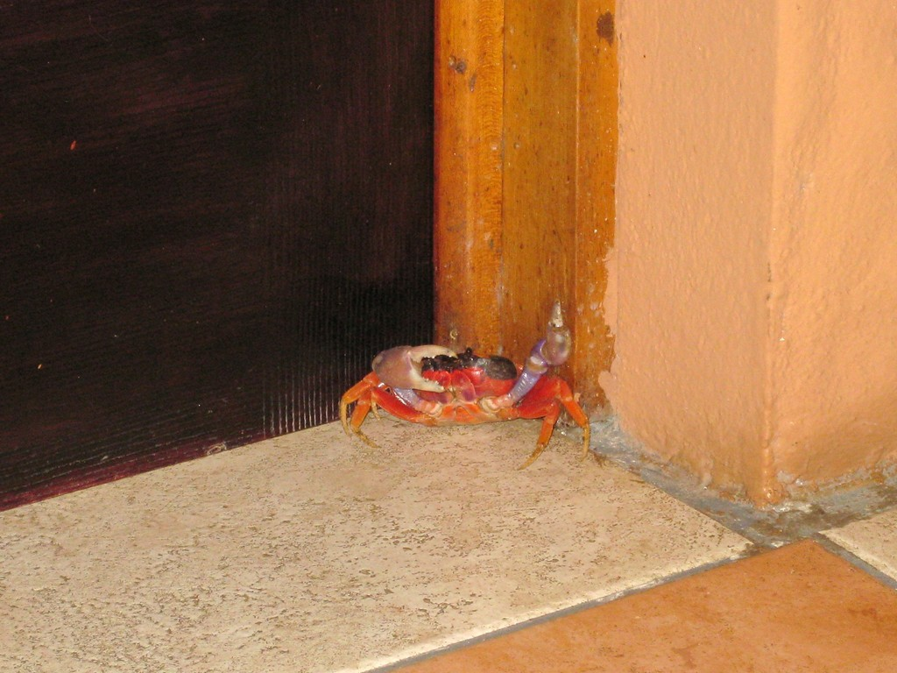 |
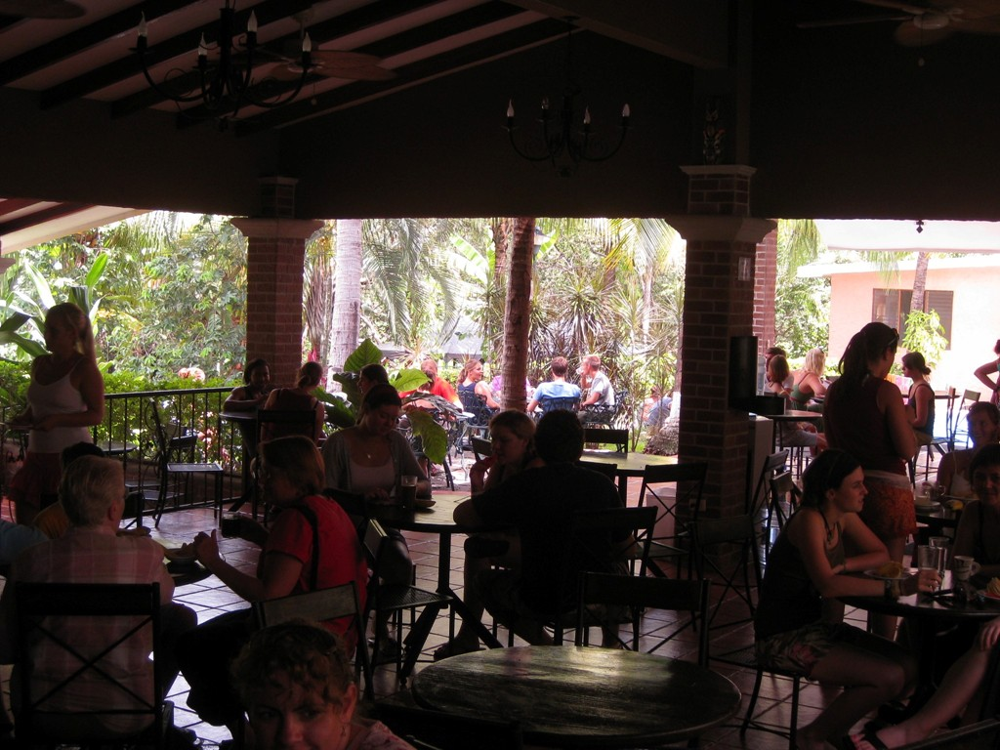 |
| Bus ride from Potrero | Help, I'm cornered! These crabs were everywhere. |
School lunch |
I discovered to my horror that I mislearned first-person, past tense, and have been blowing it my whole Spanish speaking life. Even the inscription on my iPod is wrong (Nacio in Los, ese). It's supposed to say "(I was) Born in LA, homie". It actually says "(You were) born in LA, homie". While in Costa Rica, though, I did pretty good. Corrine (see below) busted a classmate who went into a bar and ordered a head (cabeza) instead of a beer (cerveza), then said "I'm so pregnant!" (embarazada).
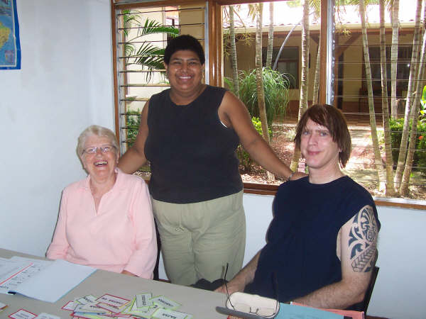 |
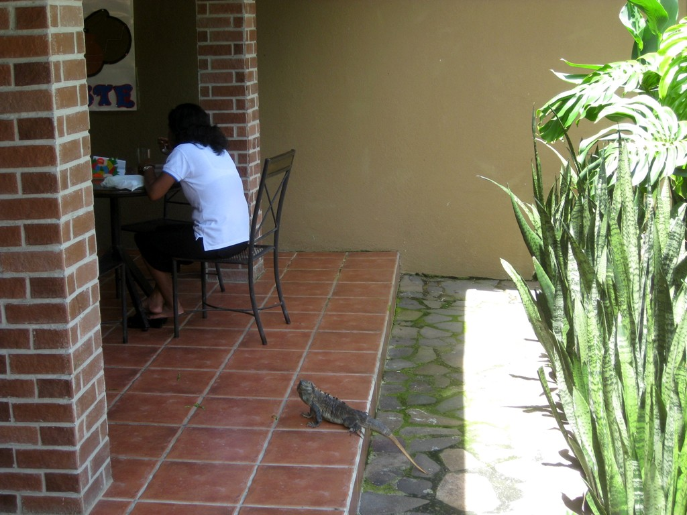 |
| Corrine was a grandmother from Mariposa County CA who came with her daughter and grandson. She works as a teacher's aid for problem kids. That's what got Flore telling us about her own son. | Whatcha got for me? |
Scuba school consists of a week of classroom work with daily tests, practicing skills in a pool, then two days of ocean diving. The experience was much better than in Australia, where there was a large class, an impatient Navy instructor ("smartly now!") and I wasn't in nearly as good shape. I learned some new stuff like why a snorkel shouldn't be longer than 17"--yes, it would stand higher above the waves, but the weight of water inside the tube would make it that much harder to clear.
The first day you redo all your skills (recovering a lost respirator, helping a buddy who's out of air, etc. etc.) in the ocean. The second day is a couple of checkout dives. We went to a formation called the Cupcake (looks like one sticking out of the water). Saw eels, rays, parrotfish, clownfish, rockfish, puffers, and a wierd thing of purple fluff with one bulging, roving eye.
I wasn't the first person in the history of the school to score 100% on all the daily tests, but I was the first person to score 100% on the final exam (I told you about my inner child). Being a physics major definitely helped with diving table calculations.
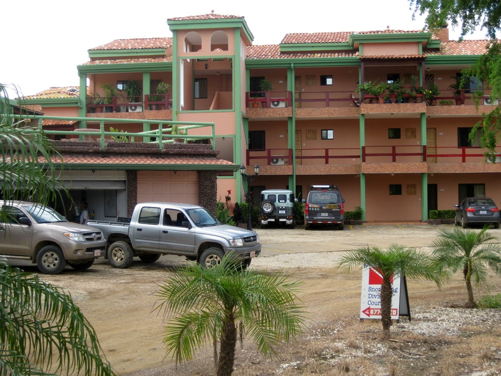 |
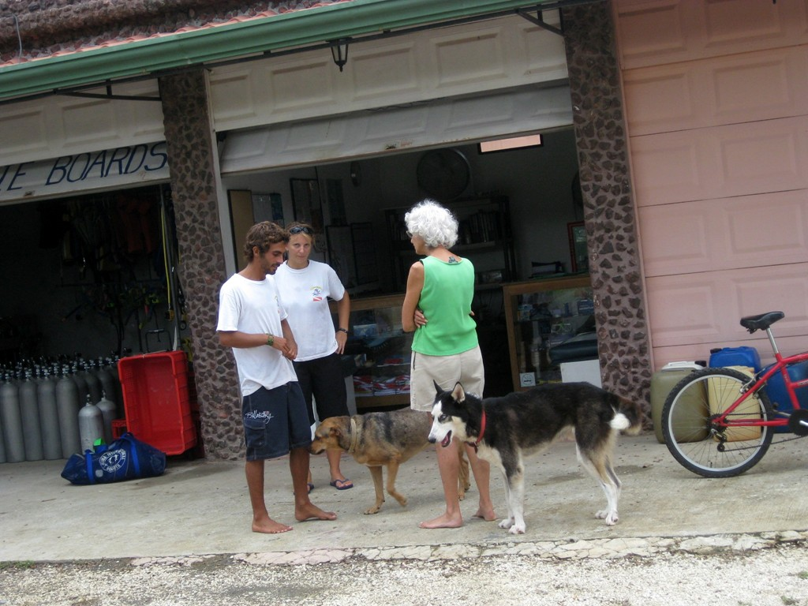 |
| Scuba school with apartments behind. | Had two instructors--an Italian guy and the English Hannah with the Oz accent (at the rear in this pic). One-on-one instruction in both cases, except for the final checkout dive, when we had three guys who looked Costa Rican, were fluent in Spanish, but spoke to each other in Cockney. One of them got very mareoso. I took Dramamine 2, which you can buy by the pill. No mareoso, no drowsiness. |
One day I came to the school and heard the ladies talking about how they'd never trust men from Tamarindo. They clued me in that the teachers across the street are all unwed mothers working to support themselves. The guys stay in a relationship until a child arrives, then move on (remember, it's a Catholic country).
| Back |